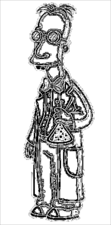
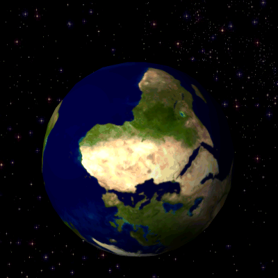

Advanced Image-Processing in R
Bindings to ImageMagick: the most comprehensive open-source image processing library available. Supports many common formats (png, jpeg, tiff, pdf, etc) and manipulations (rotate, scale, crop, trim, flip, blur, etc). All operations are vectorized via the Magick++ STL meaning they operate either on a single frame or a series of frames for working with layers, collages, or animation. In RStudio images are automatically previewed when printed to the console, resulting in an interactive editing environment.
Documentation
About the R package:
- Getting started: The magick package: Advanced Image-Processing in R
- rOpenSci Community Call (recording)
About the underlying library:
Hello World
Run examples in RStudio to see live previews of the images! If you do not use RStudio, use image_browse to open images. On Linux you can also use image_display to get an X11 preview.
library(magick)
frink <- image_read("https://jeroen.github.io/images/frink.png")
image_trim(frink)
image_scale(frink, "200x200")
image_flip(frink)
image_rotate(frink, 45) ## <-- result of this is shown
image_negate(frink)
frink |>
image_background("green") |>
image_flatten() |>
image_border("red", "10x10")
image_rotate(frink, 45) |> image_write("man/figures/frink-rotated.png")Effects
image_oilpaint(frink)
image_implode(frink)
image_charcoal(frink) ## <-- result of this is shown
image_blur(frink)
image_edge(frink)
image_charcoal(frink) |> image_write("man/figures/frink-charcoal.png")
Create GIF animation:
# Download images
oldlogo <- image_read("https://developer.r-project.org/Logo/Rlogo-2.png")
newlogo <- image_read("https://jeroen.github.io/images/Rlogo-old.png")
logos <- c(oldlogo, newlogo)
logos <- image_scale(logos, "400x400")
# Create GIF
(animation1 <- image_animate(logos))
image_write(animation1, "man/figures/anim1.gif")
# Morph effect <-- result of this is shown
(animation2 <- image_animate(image_morph(logos, frames = 10)))
image_write(animation2, "man/figures/anim2.gif")
Read GIF animation frames. See the rotating earth example GIF.
{kind=link}
earth <- image_read("https://upload.wikimedia.org/wikipedia/commons/2/2c/Rotating_earth_%28large%29.gif")
length(earth)
earth[1]
earth[1:3]
earth1 <- rev(image_flip(earth)) ## How Austrialans see earth
image_write(earth1, "man/figures/earth1.gif") ## <-- result of this is shown
R logo with dancing banana
logo <- image_read("https://www.r-project.org/logo/Rlogo.png")
banana <- image_read("https://jeroen.github.io/images/banana.gif")
front <- image_scale(banana, "300")
background <- image_scale(logo, "400")
frames <- lapply(as.list(front), function(x) image_flatten(c(background, x)))
image_write(image_animate(image_join(frames)), "man/figures/Rlogo-banana.gif")Use magick in Shiny Apps
This demo application shows how to use magick with shiny: https://github.com/jeroen/shinymagick
Installation
Binary packages for macOS or Windows can be installed directly from CRAN:
install.packages("magick")Installation from source on Linux or OSX requires the imagemagick Magick++ library. On Debian or Ubuntu install libmagick++-dev:
sudo apt-get install -y libmagick++-devOn Fedora, CentOS or RHEL we need ImageMagick-c++-devel. However on CentOS the system version of ImageMagick is quite old. More recent versions are available from the ImageMagick downloads website.
sudo yum install ImageMagick-c++-develOn macOS use imagemagick@6 from Homebrew.
brew install imagemagick@6The unversioned homebrew formulaimagemagick can also be used, however it has some unsolved OpenMP problems.
There is also a fork of imagemagick called graphicsmagick, but this doesn’t work for this package.